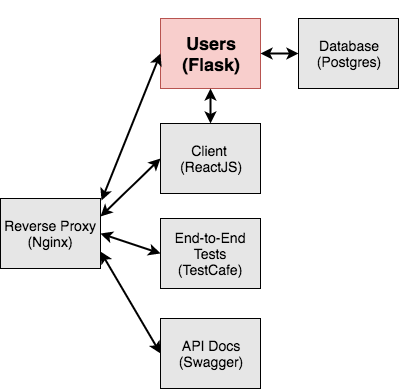
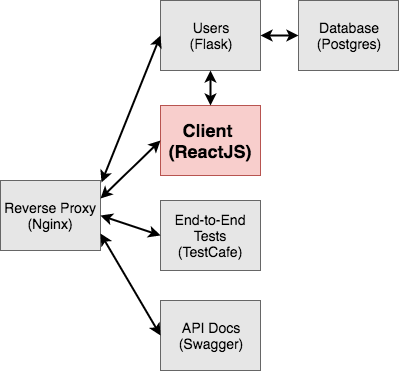

class: center, middle # Developing and Testing Microservices <br> with Docker, Flask, and React <div style="text-align:center;"> <img src="images/testdriven-architecture.png" style="max-width: 40%; border:0; box-shadow: none;" alt="microservice architecture"> </div> <br> Presented by *Michael Herman* --- ### Agenda -- ##### (1) Intro 1. About Me 1. Objectives 1. Architecture 1. Why Microservices? 1. Project Setup -- ##### (2) Containers and Services 1. Users DB (postgres) 1. Users API (flask) 1. Client (react) 1. Workflow 1. Nginx 1. End-to-End Tests 1. Swagger -- ##### (3) Goodbye 1. Next Steps 1. Questions --- ## About Michael ``` $ whoami michael.herman ``` -- #### Day Job: [Galvanize](http://www.galvanize.com/) (since May 2015)... 1. ~~Lead Instructor Full Stack~~ 1. ~~Curriculum Developer~~ 1. Senior Software Engineer -- #### Also: 1. Co-founder/author of [Real Python](https://realpython.com) 1. 😍 - [tech writing](http://mherman.org), [open source](http://github.com/mjhea0), [financial models](http://www.starterfinancialmodel.com/), [radiohead](http://radiohead.com/), [chilling](images/me.jpg) --- ### Objectives By the end of this talk, you should be able to: 1. Configure and run **microservices** locally with Docker and Docker Compose 1. Utilize **volumes** to mount your code into a container 1. Run unit and integration **tests** inside a Docker container 1. Enable services running in different containers to **talk** to one other 1. Secure your services via **JWT-based authentication** 1. Configure **React** to work with Docker 1. **Auto reload** Python/Flask code running inside a Docker Conatiner 1. Test the entire set of services with **functional, end-to-end** tests`*` 1. Configure **Swagger** to interact with a service`*` `*`time permitting ⏱ --- ## Architecture | Name | Repo | Container | Tech | |------------------|---------|-----------|----------------------| | Users API | [flask-microservices-users](https://github.com/realpython/flask-microservices-users) | `users-service` | Flask, gunicorn | | Users DB | [flask-microservices-users](https://github.com/realpython/flask-microservices-users) | `users-db` | Postgres | | Client | [flask-microservices-client](https://github.com/realpython/flask-microservices-client) | `web-service` | React, React-Router | | Swagger | [flask-microservices-swagger](https://github.com/realpython/flask-microservices-swagger) | `swagger` | Swagger UI | | e2e Tests | [flask-microservices-main](https://github.com/realpython/flask-microservices-main) | N/A | TestCafe | | Nginx | [flask-microservices-main](https://github.com/realpython/flask-microservices-main) | `nginx` | Nginx | <div> <img src="images/tech.png" style="max-width: 25%; border:0; box-shadow: none; padding-top:20px" alt="microservice tech"> </div> -- #### In general, services are... 1. Organized around domain 1. Easy to replace (if stateless) 1. Implemented using different technologies --- ### Why Microservices? -- - Complexity shifts from the inside (code, vertical stack) to the outside (platform, horizontal stack), managing each dependency, which *can* be good if you have a younger team in terms of developers. Junior developers are free to experiment and muck up smaller apps. You must have solid dev ops support though. <img src="images/microservices.png" style="max-width: 25%; border:0; box-shadow: none;" alt="microservice"> -- - Less coupling, which makes scaling easier -- - Flexible - different apps can have different code bases and dependencies -- - Smaller code base, less coupled, solid API design, not having to understand the full system = easier to read code --- ### Project Setup -- #### Repos `git clone` each repo... 1. [flask-microservices-main](https://github.com/realpython/flask-microservices-main) - mgmt scripts, docker-compose, nginx, e2e tests 1. [flask-microservices-users](https://github.com/realpython/flask-microservices-users) - flask api 1. [flask-microservices-client](https://github.com/realpython/flask-microservices-client) - react app 1. [flask-microservices-swagger](https://github.com/realpython/flask-microservices-swagger) - api documentation -- #### Docker Compose An orchestration tool for running multi-container apps. *Often, when developing applications with a microservice architecture, you cannot fully test out all services until you deploy to a staging server. This takes much too long to get feedback. Docker helps to speed up this process by making it easier to link together small, independent services locally.* Docker 101: http://mherman.org/docker-workshop <img src="images/docker-compose.png" alt="docker compose logo" style="width:60px;"> --- ### Users DB <div> <img src="images/testdriven-users-db.png" style="max-width:100%; border:0; box-shadow: none;" alt="testdriven-users-db"> </div> --- ### Users DB https://github.com/realpython/flask-microservices-users/tree/master/project/db #### Steps: 1. Review *[Dockerfile](https://github.com/realpython/flask-microservices-users/blob/master/project/db/Dockerfile)* and *[docker-compose.yml](https://github.com/realpython/flask-microservices-main/blob/master/docker-compose.yml)* 1. Build image, run container: `docker-compose up -d --build users-db` 1. Test/Sanity Check: `docker exec -ti users-db psql -U postgres -W` <div> <img src="images/postgres.png" style="max-width: 20%; border:0; box-shadow: none;" alt="postgres logo"> </div> --- ### Users API <div>  </div> --- ### Users API https://github.com/realpython/flask-microservices-users #### Steps: 1. Quick [code](https://github.com/realpython/flask-microservices-users) review 1. Review *[Dockerfile-local](https://github.com/realpython/flask-microservices-users/blob/master/Dockerfile-local)* and *[docker-compose.yml](https://github.com/realpython/flask-microservices-main/blob/master/docker-compose.yml)* 1. Build image, run container: `docker-compose up -d --build users-service` 1. Test/Sanity Check: ```sh # create and seed the db $ docker-compose run users-service python manage.py recreate_db $ docker-compose run users-service python manage.py seed_db # run unit and integration tests $ docker-compose run users-service python manage.py test ``` <br> <div> <img src="images/flask.png" style="max-width: 10%; border:0; box-shadow: none;" alt="flask logo"> </div> --- ### Client <div>  </div> --- ### Client https://github.com/realpython/flask-microservices-client #### Steps: 1. Quick [code](https://github.com/realpython/flask-microservices-client ) review 1. Review *[Dockerfile](https://github.com/realpython/flask-microservices-client/blob/master/Dockerfile)* and *[docker-compose.yml](https://github.com/realpython/flask-microservices-main/blob/master/docker-compose.yml)* 1. Build image, run container: ```sh # add env variable $ export REACT_APP_USERS_SERVICE_URL=http://DOCKER_MACHINE_DEV_IP # build and run: $ docker-compose up -d --build web-service ``` 1. Test/Sanity Check: navigate to [http://DOCKER_MACHINE_DEV_IP:9000](http://DOCKER_MACHINE_DEV_IP:9000) in your browser (you won't be able to register or log in until Nginx is set up) <br> <div> <img src="images/react-logo.svg" style="max-width: 15%; border:0; box-shadow: none;" alt="react logo"> </div> --- ### Workflow #### Users Service 1. Docker logs - `docker-compose logs -f [container-name]` 1. Live reload - make a change, watch it update! #### Web Service To take advantage of auto/hot/live reload, it is recommended to develop outside of the container: 1. Navigate to the *flask-microservices-client* directory, set the env variable: ```sh $ export REACT_APP_USERS_SERVICE_URL=http://DOCKER_MACHINE_DEV_IP ``` 1. Then run `npm start`. 1. Once done, rebuild the image - `docker-compose up -d --build` <br> <div style="text-align:left;"> <img src="images/docker-logo.png" style="max-width: 10%; border:0; box-shadow: none;" alt="docker logo"> </div> --- ### Nginx <div> <img src="images/testdriven-nginx.png" style="max-width:100%; border:0; box-shadow: none;" alt="testdriven-nginx"> </div> --- ### Nginx https://github.com/realpython/flask-microservices-main/tree/master/nginx #### Steps: 1. Quick [code](https://github.com/realpython/flask-microservices-main/tree/master/nginx) review 1. Review *[Dockerfile](https://github.com/realpython/flask-microservices-main/blob/master/nginx/Dockerfile)* and *[docker-compose.yml](https://github.com/realpython/flask-microservices-main/blob/master/docker-compose.yml)* 1. Build image, run container: `docker-compose up -d --build nginx` 1. Test/Sanity Check: navigate to [http://DOCKER_MACHINE_DEV_IP](http://DOCKER_MACHINE_DEV_IP) <br> <div> <img src="images/nginx.png" style="max-width: 20%; border:0; box-shadow: none;" alt="nginx logo"> </div> --- ### End-to-End Tests <div> <img src="images/testdriven-e2e.png" style="max-width:100%; border:0; box-shadow: none;" alt="testdriven-e2e"> </div> --- ### End-to-End Tests https://github.com/realpython/flask-microservices-main/tree/master/e2e #### Notes: 1. These are not containerized 1. Check out the TestCafe 101 @ http://mherman.org/testcafe-example #### Steps: 1. Quick [code](https://github.com/realpython/flask-microservices-main/tree/master/e2e) review 1. Test: ```sh # add env variable $ export TEST_URL=http://DOCKER_MACHINE_DEV_IP # run tests: $ testcafe chrome e2e ``` <br> <div> <img src="images/testcafe-logo.png" style="max-width: 30%; border:0; box-shadow: none;" alt="testcafe logo"> </div> --- ### Swagger <div> <img src="images/testdriven-swagger.png" style="max-width:100%; border:0; box-shadow: none;" alt="testdriven-swagger"> </div> --- ### Swagger https://github.com/realpython/flask-microservices-swagger #### Steps: 1. Quick [code](https://github.com/realpython/flask-microservices-swagger) review 1. Review *[Dockerfile](https://github.com/realpython/flask-microservices-swagger/blob/master/Dockerfile)* and *[docker-compose.yml](https://github.com/realpython/flask-microservices-main/blob/master/docker-compose.yml)* 1. Build image, run container: `docker-compose up -d --build swagger` 1. Test/Sanity Check: navigate to [http://DOCKER_MACHINE_DEV_IP:8080](http://DOCKER_MACHINE_DEV_IP:8080) <br> <div> <img src="images/swagger.png" style="max-width: 20%; border:0; box-shadow: none;" alt="swagger logo"> </div> --- ### That's it! What's next? -- #### Resources: 1. [Slides](http://mherman.org/presentations/microservices-flask-docker) 1. ***[Testdriven.io](http://testdriven.io/) - full tutorial!*** ❤️ 1. [How to Build 12 Factor Microservices on Docker](https://www.packtpub.com/books/content/how-to-build-12-factor-design-microservices-on-docker-part-1) 1. [Docker Cheat Sheet](https://github.com/wsargent/docker-cheat-sheet) -- #### Other examples: 1. [Developing and Testing Microservices With Docker](http://mherman.org/blog/2017/04/18/developing-and-testing-microservices-with-docker) 1. [Developing Microservices - Node, React, and Docker](http://mherman.org/blog/2017/05/11/developing-microservices-node-react-docker) 1. [Developing React with Docker](http://mherman.org/node-workshop/slides/react-docker) -- #### Self-promotion: 1. Want more? Check out my Workshop at [Develop Denver](https://developdenver.org/schedule) on August 11th, 2017 - *Developing and Testing Microservices - Node, React, and Docker* 1. 50% off [Real Python](https://realpython.com) - *50BOLDPY* --- ### Questions? -- Well...